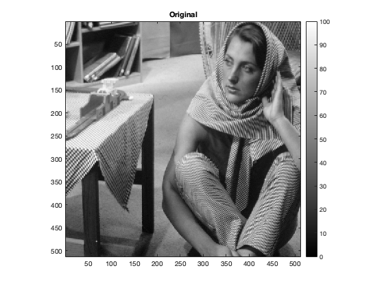
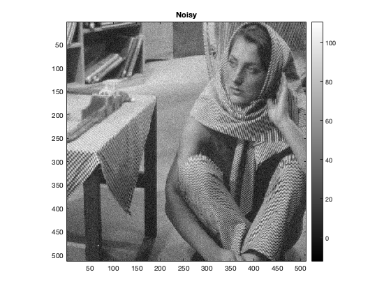
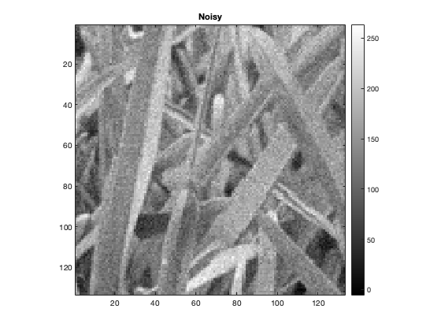
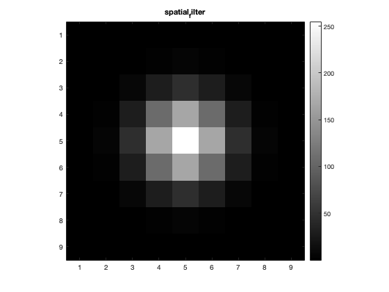
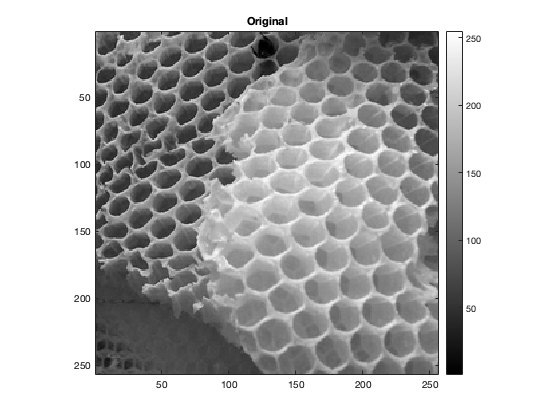
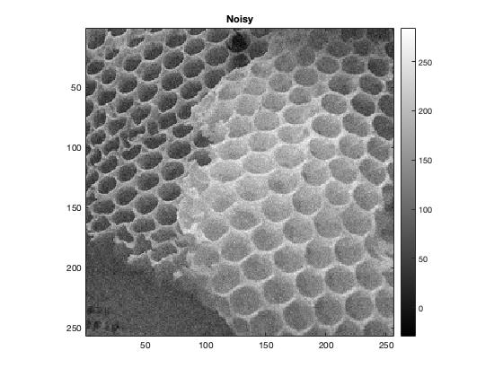
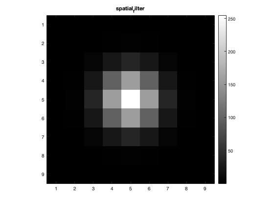

Contents
- MyMainScript Q.3
- Reading images
- Patch based filtering for image1 (barbara)
- Original
- Noisy
- Denoised
- spatial filter
- RMSD value for the fine tuned h (main_sd)
- RMSD value for 0.9 * h (main_sd)
- RMSD value for 1.1 * h (main_sd)
- Patch based filtering for image2 (grass)
- Original
- Noisy
- Denoised
- spatial filter
- RMSD value for the fine tuned h (main_sd)
- RMSD value for 0.9 * h (main_sd)
- RMSD value for 1.1 * h (main_sd)
- Patch based filtering for image3 (honey comb)
- original
- Noisy
- Denoised
- spatial filter
- RMSD value for the fine tuned h (main_sd)
- RMSD value for 0.9 * h (main_sd)
- RMSD value for 1.1 * h (main_sd)
- THE END
MyMainScript Q.3
clear; myNumOfColors = 200; myColorScale = [ [0:1/(myNumOfColors-1):1]',[0:1/(myNumOfColors-1):1]' , [0:1/(myNumOfColors-1):1]' ];
Reading images
im1=load("../data/barbara.mat"); im1=im1.imageOrig; im2=imread("../data/grass.png"); im3=imread("../data/honeyCombReal.png");
Patch based filtering for image1 (barbara)
Adding noise to the original image
im=double(im1); sd=(0.05)*(max(im1,[],'all')-min(im1,[],'all')); rng(180050023); im_noise_barbara=im+sd*randn(size(im1,1),size(im1,2)); % These are the fine tune parameters for this image spatial_sd = 1.14; main_sd = 6.12; % filtered image im_filtered_barbara = myPatchBasedFiltering(im_noise_barbara,spatial_sd,main_sd);
Original
figure; imagesc(im1), title("Original"),colormap(myColorScale),daspect ([1 1 1]); axis tight; colorbar;
Noisy
figure; imagesc(im_noise_barbara), title("Noisy"),colormap(myColorScale),daspect ([1 1 1]); axis tight; colorbar;
Denoised
figure; imagesc(im_filtered_barbara), title("Denoised"),colormap(myColorScale),daspect ([1 1 1]); axis tight; colorbar;
spatial filter
spatial_filter_barbara=fspecial('gaussian',9, spatial_sd); figure; imagesc((255/spatial_filter_barbara(5,5))*spatial_filter_barbara), title("spatial_filter"),colormap(myColorScale),daspect ([1 1 1]); axis tight; colorbar;
RMSD value for the fine tuned h (main_sd)
rmsd_barbara = RMSD(im1,im_filtered_barbara);
formatSpec = 'The optimal RMSD for barbara is %0.5f';
sprintf(formatSpec,rmsd_barbara)
ans =
'The optimal RMSD for barbara is 2.58866'
RMSD value for 0.9 * h (main_sd)
filtered image for 0.9 * h (main_sd)
im_filtered_barbara_1 = myPatchBasedFiltering(im_noise_barbara,spatial_sd,0.9*main_sd);
rmsd_barbara_1 = RMSD(im1,im_filtered_barbara_1);
formatSpec = 'The RMSD for barbara for 0.9 * h is %0.5f';
sprintf(formatSpec,rmsd_barbara_1)
ans =
'The RMSD for barbara for 0.9 * h is 2.62612'
RMSD value for 1.1 * h (main_sd)
filtered image for 1.1 * h (main_sd)
im_filtered_barbara_2 = myPatchBasedFiltering(im_noise_barbara,spatial_sd,1.1*main_sd);
rmsd_barbara_2 = RMSD(im1,im_filtered_barbara_2);
formatSpec = 'The RMSD for barbara for 1.1 * h is %0.5f';
sprintf(formatSpec,rmsd_barbara_2)
ans =
'The RMSD for barbara for 1.1 * h is 2.63696'
Patch based filtering for image2 (grass)
% Adding noise to the original image im2=double(im2); sd=(0.05)*(max(im2,[],'all')-min(im2,[],'all')); rng(180050023); im_noise_grass=im2+sd*randn(size(im2,1),size(im2,2)); % These are the fine tune parameters for this image spatial_sd = 1.08; main_sd = 14.30; % filtered image im_filtered_grass = myPatchBasedFiltering(im_noise_grass,spatial_sd,main_sd);
Original
figure; imagesc(im2), title("Original"),colormap(myColorScale),daspect ([1 1 1]); axis tight; colorbar;
Noisy
figure; imagesc(im_noise_grass), title("Noisy"),colormap(myColorScale),daspect ([1 1 1]); axis tight; colorbar;
Denoised
figure; imagesc(im_filtered_grass), title("Denoised"),colormap(myColorScale),daspect ([1 1 1]); axis tight; colorbar;
spatial filter
spatial_filter_grass=fspecial('gaussian',9, spatial_sd); figure; imagesc((255/spatial_filter_grass(5,5))*spatial_filter_grass), title("spatial_filter"),colormap(myColorScale),daspect ([1 1 1]); axis tight; colorbar;
RMSD value for the fine tuned h (main_sd)
rmsd_grass = RMSD(im2,im_filtered_grass);
formatSpec = 'The optimal RMSD for grass is %0.5f';
sprintf(formatSpec,rmsd_grass)
ans =
'The optimal RMSD for grass is 7.41865'
RMSD value for 0.9 * h (main_sd)
filtered image for 0.9 * h (main_sd)
im_filtered_grass_1 = myPatchBasedFiltering(im_noise_grass,spatial_sd,0.9*main_sd);
rmsd_grass_1 = RMSD(im2,im_filtered_grass_1);
formatSpec = 'The RMSD for grass for 0.9 * h is %0.5f';
sprintf(formatSpec,rmsd_grass_1)
ans =
'The RMSD for grass for 0.9 * h is 7.52690'
RMSD value for 1.1 * h (main_sd)
filtered image for 1.1 * h (main_sd)
im_filtered_grass_2 = myPatchBasedFiltering(im_noise_grass,spatial_sd,1.1*main_sd);
rmsd_grass_2 = RMSD(im2,im_filtered_grass_2);
formatSpec = 'The RMSD for grass for 1.1 * h is %0.5f';
sprintf(formatSpec,rmsd_grass_2)
ans =
'The RMSD for grass for 1.1 * h is 7.58574'
Patch based filtering for image3 (honey comb)
% Adding noise to the original image im3=double(im3); sd=(0.05)*(max(im3,[],'all')-min(im3,[],'all')); rng(180050023); im_noise_honey_comb=im3+sd*randn(size(im3,1),size(im3,2)); % These are the fine tune parameters for this image spatial_sd = 1.02; main_sd = 16.39; % filtered image im_filtered_honey_comb = myPatchBasedFiltering(im_noise_honey_comb,spatial_sd,main_sd);
original
figure; imagesc(im3), title("Original"),colormap(myColorScale),daspect ([1 1 1]); axis tight; colorbar;
Noisy
figure; imagesc(im_noise_honey_comb), title("Noisy"),colormap(myColorScale),daspect ([1 1 1]); axis tight; colorbar;
Denoised
figure; imagesc(im_filtered_honey_comb), title("Denoised"),colormap(myColorScale),daspect ([1 1 1]); axis tight; colorbar;
spatial filter
spatial_filter_honey_comb=fspecial('gaussian',9, spatial_sd); figure; imagesc((255/spatial_filter_honey_comb(5,5))*spatial_filter_honey_comb), title("spatial_filter"),colormap(myColorScale),daspect ([1 1 1]); axis tight; colorbar;
RMSD value for the fine tuned h (main_sd)
rmsd_honey_comb = RMSD(im3,im_filtered_honey_comb);
formatSpec = 'The optimal RMSD for honey comb is %0.5f';
sprintf(formatSpec,rmsd_honey_comb)
ans =
'The optimal RMSD for honey comb is 7.48603'
RMSD value for 0.9 * h (main_sd)
filtered image for 0.9 * h (main_sd)
im_filtered_honey_1 = myPatchBasedFiltering(im_noise_honey_comb,spatial_sd,0.9*main_sd);
rmsd_honey_1 = RMSD(im3,im_filtered_honey_1);
formatSpec = 'The RMSD for honey comb for 0.9 * h is %0.5f';
sprintf(formatSpec,rmsd_honey_1)
ans =
'The RMSD for honey comb for 0.9 * h is 7.49690'
RMSD value for 1.1 * h (main_sd)
filtered image for 1.1 * h (main_sd)
im_filtered_honey_2 = myPatchBasedFiltering(im_noise_honey_comb,spatial_sd,1.1*main_sd);
rmsd_honey_2 = RMSD(im3,im_filtered_honey_2);
formatSpec = 'The RMSD for honey comb for 1.1 * h is %0.5f';
sprintf(formatSpec,rmsd_honey_2)
ans =
'The RMSD for honey comb for 1.1 * h is 7.71273'